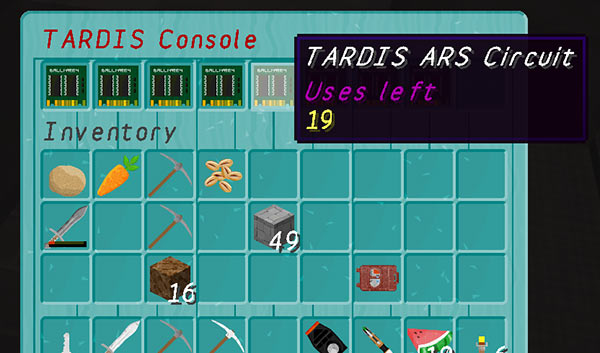
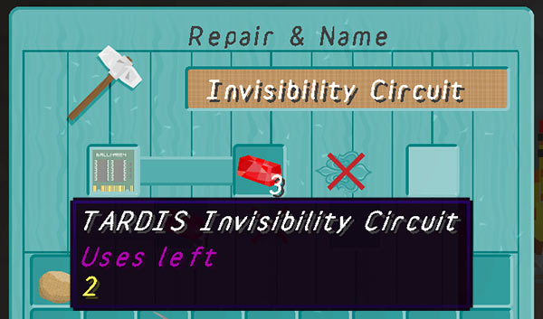
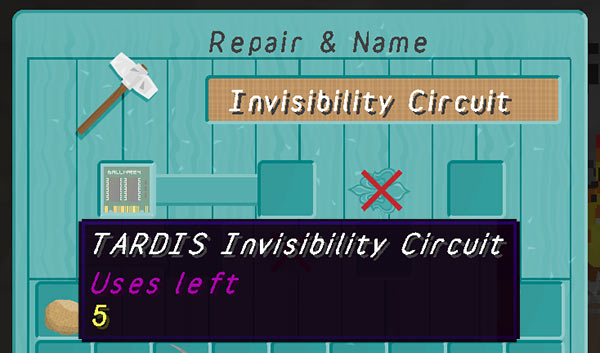

A Bukkit plugin for all Doctor Who fans — create and use a TARDIS! It’s bigger on the inside!
If configured (difficulty: hard and damage: true), circuits can become damaged after use. When the tardis malfunctions there is a 50% chance that a circuit will become damaged even more than usual.

Circuit use could will decrease in the following circumstances:
| Circuit | Used when |
|---|---|
| ars | clicking the ‘Reconfigure’ button in the ARS GUI |
| chameleon | clicking the ‘Apply preset mow’ button in the Chameleon Circuit GUI |
| input | setting a destination with the Destination Terminal |
| invisibility | selecteing the Invibility preset in the Chameleon Circuit GUI |
| materialisation | the TARDIS re-materialises after travelling |
| memory | processing a disk in the Advanced Console |
| randomiser | getting a random destination in the Advanced Console |
| scanner | pressing the Scanner button |
| temporal | setting the time in the Temporal Locator GUI |
Circuits can be repaired by combining them with redstone in an anvil.
You need to click the output slot to make the repair. One redstone gives one level of use.


The defaults are shown below:
circuits:
damage: false
uses:
ars: 20
chameleon: 25
input: 50
invisibility: 5
materialisation: 50
memory: 20
randomiser: 50
scanner: 20
temporal: 20damage: [true|false] — whether circuits get damaged after each use. Setting this to false (the default) means circuits have unlimited uses.
uses: <circuit>: [amount] — set the maximum number of uses a circuit has before it is vapourised. Setting this to 0 gives unlimited uses for that circuit.